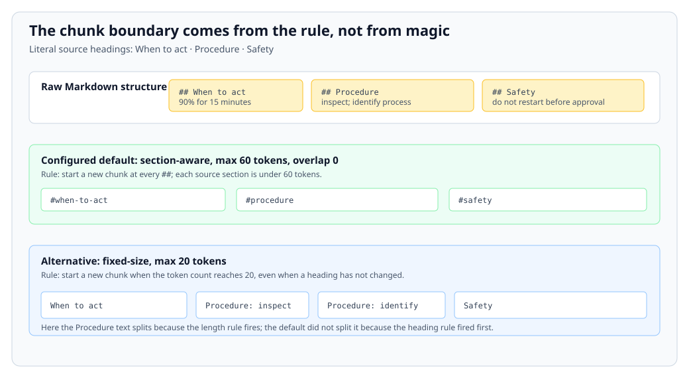
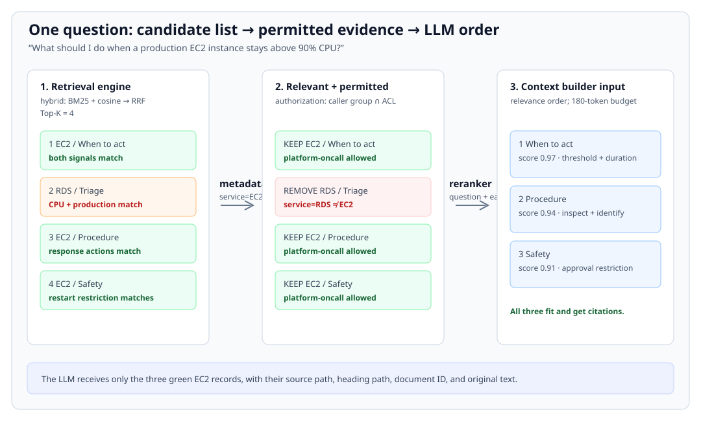

AI Knowledge Bases and Retrieval
This page follows one RAG request from a Markdown file in a repository to a cited on-call answer. Its running question is:
What should I do when a production EC2 instance stays above 90% CPU?
Start with the map. The first question has no evidence; after the runbook is ingested, the second question follows every arrow in order. Every stage names its input, the component that acts (who), its rule/configuration, and its output.
1. Big picture: complete RAG flow
runbooks/ec2-cpu.md
↓ parse → chunk → embed → index
vector database: chunks + vectors + source metadata
user question
↓ preserve original → embed → hybrid retrieve
candidates
↓ metadata filter → authorization → rerank
permitted, ordered evidence
↓ context builder
exact LLM context
↓ LLM
grounded answer + citation

2. Before Stage 1 — empty means no evidence
The on-call engineer asks:
What should I do when a production EC2 instance stays above 90% CPU?
At this moment, the vector database has no runbook records.
INPUT: user question
WHO: retrieval engine
RULE: search only indexed records
OUTPUT: []
INPUT: []
WHO: LLM
RULE: answer only from supplied evidence
OUTPUT: "Insufficient evidence to give an operational instruction."
Nothing failed: there is simply no evidence to retrieve. The platform team now commits a Markdown runbook.
3. Stage 1 — ingest one file into index records
The actual source file
Physical input: the repository contains this exact UTF-8 file at runbooks/ec2-cpu.md.
---
document_id: RUN-EC2-CPU-2026
service: EC2
environment: prod
region: ap-southeast-2
status: current
allowed_groups:
- platform-oncall
---
# Production EC2 CPU triage
## When to act
If production EC2 CPU exceeds 90% for 15 minutes, start this procedure.
## Procedure
1. Inspect CloudWatch metrics.
2. Identify the process using the CPU.
## Safety
Do not restart a production instance before service-owner approval.
For this walkthrough, all metadata comes from this file’s frontmatter. It is not inferred from the prose, and it is not supplied by the user at query time.
runbooks/ec2-cpu.md3.1 Parse: Markdown bytes → structured document
INPUT: the literal runbooks/ec2-cpu.md file above.
WHO: markdown-parser-v2 in the ingestion service.
RULE / CONFIG:
- read YAML frontmatter only from the opening
---block; - accept the schema fields
document_id,service,environment,region,status, andallowed_groups; - turn
#and##lines into headings; preserve paragraph and ordered-list order; - reject the file if a required field is absent or
allowed_groupsis empty.
OUTPUT: one structured document. The metadata values below came directly from frontmatter; the sections came directly from Markdown headings and their following text.
source_path: runbooks/ec2-cpu.md
metadata:
document_id: RUN-EC2-CPU-2026
service: EC2
environment: prod
region: ap-southeast-2
status: current
allowed_groups: [platform-oncall]
sections:
1. heading_path: Production EC2 CPU triage > When to act
text: If production EC2 CPU exceeds 90% for 15 minutes, start this procedure.
2. heading_path: Production EC2 CPU triage > Procedure
text: 1. Inspect CloudWatch metrics. 2. Identify the process using the CPU.
3. heading_path: Production EC2 CPU triage > Safety
text: Do not restart a production instance before service-owner approval.
The parser did not create “CPU threshold” or “safety rule” labels. It only produced headings, text, and frontmatter fields that physically exist in the source.
3.2 Chunk: structured document → three retrieval units
INPUT: the three parsed sections above.
WHO: section-chunker-v1 in the ingestion service.
RULE / CONFIG: strategy=section-aware, max_tokens=60, overlap_tokens=0. Start a new chunk at each ## heading. Keep its full heading path. Do not merge sections when each section is under 60 tokens.
OUTPUT: exactly three chunks:
chunk_id: RUN-EC2-CPU-2026#when-to-act
heading_path: Production EC2 CPU triage > When to act
text: If production EC2 CPU exceeds 90% for 15 minutes, start this procedure.
metadata copied from frontmatter: service=EC2, environment=prod,
region=ap-southeast-2, status=current, allowed_groups=[platform-oncall]
chunk_id: RUN-EC2-CPU-2026#procedure
heading_path: Production EC2 CPU triage > Procedure
text: 1. Inspect CloudWatch metrics. 2. Identify the process using the CPU.
metadata copied from frontmatter: service=EC2, environment=prod,
region=ap-southeast-2, status=current, allowed_groups=[platform-oncall]
chunk_id: RUN-EC2-CPU-2026#safety
heading_path: Production EC2 CPU triage > Safety
text: Do not restart a production instance before service-owner approval.
metadata copied from frontmatter: service=EC2, environment=prod,
region=ap-southeast-2, status=current, allowed_groups=[platform-oncall]
Each boundary exists because the next ## heading begins a new section—not because the chunker discovered a topic change. overlap_tokens=0 means no sentence is copied into a neighbouring chunk. The copied metadata is how every chunk later carries the document’s region, status, and ACL.
The diagram makes the configured boundary decision visible. The green row is the default used in this walkthrough; the blue row is an alternative, not another hidden pipeline step.

3.3 Embed: chunk text → vectors
INPUT: each chunk’s text field. The headings and metadata remain stored alongside it; this configuration embeds only the text field.
WHO: configured embedding model ops-embed-demo-v1.
RULE / CONFIG: use the same model for documents and future queries. This fictional teaching model emits a six-number vector and uses cosine similarity. Real embedding vectors are usually much longer.
OUTPUT: the model returns one vector per input text:
RUN-EC2-CPU-2026#when-to-act
text: If production EC2 CPU exceeds 90% for 15 minutes, start this procedure.
vector: [0.82, 0.11, -0.06, 0.41, 0.27, 0.09]
RUN-EC2-CPU-2026#procedure
text: 1. Inspect CloudWatch metrics. 2. Identify the process using the CPU.
vector: [0.63, 0.38, 0.04, 0.55, 0.14, 0.22]
RUN-EC2-CPU-2026#safety
text: Do not restart a production instance before service-owner approval.
vector: [0.34, 0.05, -0.31, 0.20, 0.76, 0.48]
The numbers are the model’s output, not labels extracted from the runbook. They look unrelated to the prose because vector dimensions are learned numeric features, not human-readable fields.
3.4 Index: chunk + vector + metadata → database record
INPUT: each chunk, its vector, and the metadata copied by the chunker.
WHO: index-writer-v1.
RULE / CONFIG: write one record per chunk_id into collection runbooks-v1; use vector for nearest-neighbour search; retain text, heading_path, source_path, and metadata for filtering, authorization, and citations.
OUTPUT: the vector database now contains these three EC2 records. One record looks like this:
collection: runbooks-v1
id: RUN-EC2-CPU-2026#procedure
vector: [0.63, 0.38, 0.04, 0.55, 0.14, 0.22]
text: 1. Inspect CloudWatch metrics. 2. Identify the process using the CPU.
heading_path: Production EC2 CPU triage > Procedure
source_path: runbooks/ec2-cpu.md
metadata: service=EC2, environment=prod, region=ap-southeast-2,
status=current, allowed_groups=[platform-oncall]
The knowledge base can now retrieve evidence. Ingestion is complete; no LLM was used to write or authorize this record.
For one later filtering decision, this reduced teaching database also already contains one unrelated record from an earlier ingestion. It did not come from runbooks/ec2-cpu.md:
id: RUN-RDS-CPU-2026#triage
source_path: runbooks/rds-cpu.md
text: If production RDS CPU is high, inspect database load and active sessions.
metadata: service=RDS, environment=prod, region=ap-southeast-2,
status=current, allowed_groups=[platform-oncall]
This is the complete corpus for the query below: the three EC2 records created above plus this one RDS record.
4. Stage 2 — use those records to answer the question
The same engineer asks again:
What should I do when a production EC2 instance stays above 90% CPU?
4.1 Process the question: user text → retrieval query
INPUT: the exact user question above.
WHO: query-processor-v1.
RULE / CONFIG: preserve_original=true, rewrite=false for this walkthrough. The question is already specific; the processor must not silently replace a safety-critical request.
OUTPUT: a retrieval request containing the unchanged text:
original_question: What should I do when a production EC2 instance stays above 90% CPU?
retrieval_text: What should I do when a production EC2 instance stays above 90% CPU?
No rewrite appears because the configured rule disabled it. A rewrite is an optional alternative introduced after the default flow.
4.2 Embed the retrieval query: text → query vector
INPUT: retrieval_text from the query processor.
WHO: the same ops-embed-demo-v1 embedding model used during ingestion.
RULE / CONFIG: six dimensions; cosine similarity; use the document/query-compatible model version ops-embed-demo-v1.
OUTPUT:
query_vector: [0.79, 0.17, -0.02, 0.47, 0.22, 0.13]
Using the same model is what makes this vector comparable with the three stored chunk vectors.
4.3 Retrieve: query → initial candidate list
INPUT: the original query text, its query vector, and indexed records.
WHO: retrieval-engine-v1.
RULE / CONFIG: hybrid; BM25 searches text, vector search uses cosine similarity over vector, reciprocal-rank fusion (rrf_k=60) combines their ranks, then top_k=4 is returned.
OUTPUT: four candidates. The RDS record is the explicit pre-existing record shown at the end of ingestion; it is included because CPU and production match the query, not because it came from the EC2 Markdown file.
1. RUN-EC2-CPU-2026#when-to-act source: runbooks/ec2-cpu.md
fused_rank: 1 reason: BM25 and vector search both match EC2 + CPU + 90%
2. RUN-RDS-CPU-2026#triage source: runbooks/rds-cpu.md
fused_rank: 2 reason: CPU and production match, but metadata service=RDS
3. RUN-EC2-CPU-2026#procedure source: runbooks/ec2-cpu.md
fused_rank: 3 reason: vector search matches the requested response actions
4. RUN-EC2-CPU-2026#safety source: runbooks/ec2-cpu.md
fused_rank: 4 reason: lexical and vector search match production + restart
These are retrieval candidates, not yet approved evidence. The RDS item is not derived from the EC2 source file; its displayed source and service=RDS explain where it came from and why it is still present at this stage.
4.4 Filter by metadata: candidates → relevant candidates
INPUT: the four candidates above, including their stored metadata.
WHO: metadata-filter-v1.
RULE / CONFIG: retain only service=EC2 AND environment=prod AND region=ap-southeast-2 AND status=current.
OUTPUT: three candidates. The filter removes exactly one record:
REMOVE RUN-RDS-CPU-2026#triage
RULE service=RDS does not equal required service=EC2
KEEP RUN-EC2-CPU-2026#when-to-act
KEEP RUN-EC2-CPU-2026#procedure
KEEP RUN-EC2-CPU-2026#safety
service, environment, region, and status exist because the Markdown frontmatter supplied them and the chunker copied them to every index record. They were not inferred from the question.
4.5 Authorize: relevant candidates → permitted candidates
INPUT: the three filtered EC2 candidates and the caller identity from the trusted identity service:
caller_id: alex@example.internal
groups: [platform-oncall]
WHO: authorization-layer-v1.
RULE / CONFIG: keep a candidate only when the caller has at least one group in the candidate’s stored allowed_groups. Missing ACL metadata means deny.
OUTPUT: all three candidates are permitted:
PERMIT RUN-EC2-CPU-2026#when-to-act [platform-oncall] ∩ [platform-oncall] ≠ ∅
PERMIT RUN-EC2-CPU-2026#procedure [platform-oncall] ∩ [platform-oncall] ≠ ∅
PERMIT RUN-EC2-CPU-2026#safety [platform-oncall] ∩ [platform-oncall] ≠ ∅
No candidate disappears at this step in this run. That is visible in the output: all three have the ACL value copied from source frontmatter, and the caller has the matching trusted group. Authorization happens before the LLM sees the text.
4.6 Rerank: permitted candidates → answer order
INPUT: the question plus the three permitted candidate texts.
WHO: ops-reranker-v1, a cross-encoder reranker.
RULE / CONFIG: score each question-and-chunk pair for direct usefulness in answering the question; sort descending; do not add new candidates.
OUTPUT:
1. RUN-EC2-CPU-2026#when-to-act score=0.97 threshold and duration answer “when”
2. RUN-EC2-CPU-2026#procedure score=0.94 inspection actions answer “what to do”
3. RUN-EC2-CPU-2026#safety score=0.91 restart restriction is required safety context
The reranker changes only the order. It cannot recover the RDS item after filtering or any chunk that was missed before top_k=4.

4.7 Build context: ordered candidates → exact LLM input
INPUT: the three ordered, permitted candidates, their source paths, and the original question.
WHO: context-builder-v1.
RULE / CONFIG: deduplicate by document_id + chunk_id; maximum evidence budget 180 tokens; preserve the reranker order; attach each chunk’s source_path, heading_path, and document_id as its citation. All three chunks fit, so none is dropped.
OUTPUT: exactly this LLM context:
SYSTEM
Answer only from EVIDENCE. If EVIDENCE is insufficient, say so.
Cite the document ID that supports each instruction.
EVIDENCE 1
document_id: RUN-EC2-CPU-2026
source: runbooks/ec2-cpu.md
section: Production EC2 CPU triage > When to act
If production EC2 CPU exceeds 90% for 15 minutes, start this procedure.
EVIDENCE 2
document_id: RUN-EC2-CPU-2026
source: runbooks/ec2-cpu.md
section: Production EC2 CPU triage > Procedure
1. Inspect CloudWatch metrics. 2. Identify the process using the CPU.
EVIDENCE 3
document_id: RUN-EC2-CPU-2026
source: runbooks/ec2-cpu.md
section: Production EC2 CPU triage > Safety
Do not restart a production instance before service-owner approval.
QUESTION
What should I do when a production EC2 instance stays above 90% CPU?
The RDS record does not appear because the metadata filter removed it. Nothing was removed for authorization, deduplication, or the token budget in this run; their rules are stated so that result is explainable.
4.8 Generate: LLM context → grounded answer
INPUT: the exact context above.
WHO: operations-answer-llm-v1.
RULE / CONFIG: follow the system instruction; make no operational claim that is absent from EVIDENCE; include the supporting document ID.
OUTPUT:
If production EC2 CPU exceeds 90% for 15 minutes, inspect CloudWatch metrics
and identify the process using the CPU. Do not restart the production instance
before service-owner approval. [RUN-EC2-CPU-2026]
The answer has its threshold, actions, restriction, and citation because each was present in the context builder’s output—not because the model knew an unstated runbook.
5. Only now: change one component at a time
The default flow above used section-aware chunks, hybrid retrieval, Top-K = 4, and one ANN-capable vector search. Alternatives change a named component and therefore a specific output.
| Change | Component and new rule | What changes in this story | Trade-off to evaluate |
|---|---|---|---|
| Fixed-size instead of section-aware chunking | Chunker: split every 40 tokens | A boundary can land inside the Procedure or between Procedure and Safety, because length—not headings—decides it. | More uniform size; related instructions can separate. |
| Semantic chunking instead of section-aware | Chunker: split at detected topic changes | Boundaries come from a model’s topic decision instead of the literal ## headings. |
May improve topical focus; boundaries can change when the model/configuration changes. |
| Lexical-only instead of hybrid | Retrieval engine: BM25 only | Exact words such as EC2, CPU, and 90% dominate; differently worded queries may lose EC2 candidates. |
Strong exact match; weaker vocabulary mismatch. |
| Semantic-only instead of hybrid | Retrieval engine: vector similarity only | Similar meaning dominates; exact identifiers such as RUN-EC2-CPU-2026 get less special treatment. |
Handles paraphrase; can weaken exact-ID retrieval. |
Top-K: 4 → 10 |
Retrieval engine: return ten fused candidates | More records enter metadata filtering and reranking. | Recall may improve; noise, reranking latency, and context pressure increase. |
| More ANN search effort | Vector search: explore more HNSW neighbours or IVF partitions | The vector half of hybrid search considers more approximate neighbours before fusion. | Recall may improve; latency increases. |
| Enable query rewrite | Query processor: preserve original and generate a second retrieval text | The engine may also search “EC2 high-CPU triage procedure.” | Can bridge vocabulary; a bad rewrite can change intent, so trace both texts. |
HNSW vs IVF: both are ANN index choices inside the retrieval engine. HNSW follows a graph of vector neighbours; IVF searches selected vector clusters. Neither changes the original Markdown, parsed document, metadata, ACL, or LLM rules—only which vector candidates are likely to reach rank fusion.
Evaluate changes against traces like this one. Recall@K asks whether required permitted chunks appeared in the candidate list; Precision@K asks how much of that list was useful; latency and authorization leakage check the cost and safety of the same request. A fluent final answer cannot compensate for missing or forbidden evidence.
6. The causal chain
runbooks/ec2-cpu.md
→ Markdown parser / frontmatter + heading rules
→ structured sections + metadata from frontmatter
→ section chunker / max 60, overlap 0
→ three named chunks + copied metadata
→ embedding model / ops-embed-demo-v1
→ vectors
→ index writer / one record per chunk
→ vector database
user question
→ query processor / preserve original, no rewrite
→ retrieval text
→ embedding model / same model
→ query vector
→ retrieval engine / hybrid, RRF, Top-K 4
→ four candidates
→ metadata filter / EC2 + prod + ap-southeast-2 + current
→ three EC2 candidates
→ authorization / platform-oncall versus allowed_groups
→ three permitted candidates
→ reranker / question relevance
→ ordered candidates
→ context builder / dedupe, 180 tokens, citations
→ exact LLM context
→ LLM / evidence-only answer rule
→ grounded answer + RUN-EC2-CPU-2026 citation
For production controls see AI infrastructure and evaluation. For AWS implementations see AWS AI services.